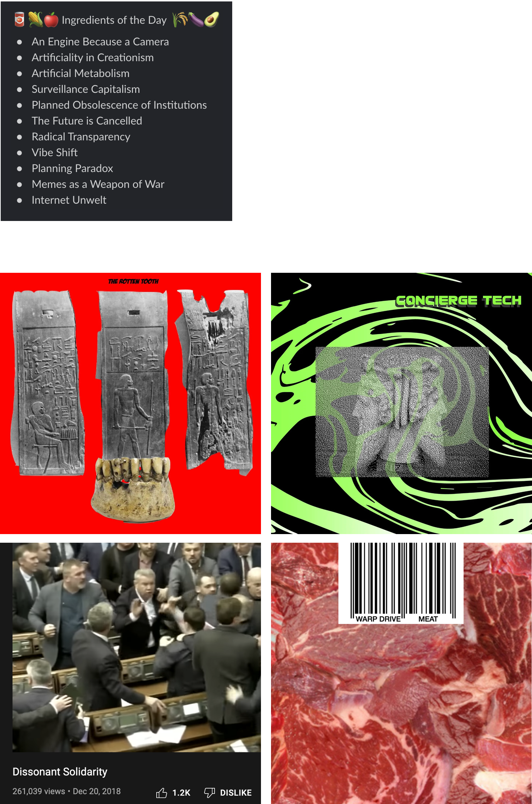

‘Concept Archaeology’ is a workshop in which participants research novel concepts generated by GPT-3 using prompts taken from an archive of design research. The workshop is structured as a ‘reverse design charrette’, forcing designers to work backwards from their generated concept.
The workshop is framed as an encounter with an ancient being in the form of GPT-3, with thousands of years of experience reading and synthesising literature and data scraped from the internet. Working with concepts generated by GPT-3 becomes an archaeology of the concept to discover some of its potential roots in history, theory and aesthetics. Knowledge generated during the workshop is then added into the original archive.

Workshop flow. 'The Rotten Tooth' and 'Concierge Tech' imagery and concept were developed by Flora Weil
I designed the workshop and developed content working with Flora Weil, Joel Blanco, Virginia Zangs, Uliana Kovalenko, Danya Orlovsky and Maximilian Schob.